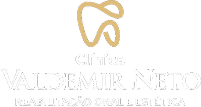

Seu sorriso novo
em tempo recorde
Atendimento individualizado, planejamento claro e diferentes especialidades reunidas para cuidar da sua saúde bucal em cada etapa.
Agende sua avaliação Atendimento na Zona Leste de Teresina
Você se identifica?
Um plano claro para cuidar de cada etapa do seu sorriso
- Dúvidas sobre qual tratamento realmente é indicado para você
- Necessidades diferentes sendo tratadas de forma isolada
- Receio de começar sem entender etapas, alternativas e cuidados
- Dificuldade para encontrar prevenção, estética, cirurgia e reabilitação no mesmo lugar
A avaliação organiza prioridades e transforma necessidades diferentes em um plano individualizado.
Quer entender seu caso?
Converse com a clínica e saiba por onde começar
Atendimento individualizado do diagnóstico à manutenção
O Dr. Valdemir Pereira Neto, CRO 3085/PI, é o responsável técnico pela clínica. A avaliação considera saúde bucal, queixa principal, exames e objetivos antes de definir qualquer tratamento ou prazo.
Implantes, protocolo, prevenção, estética, ortodontia e cirurgia têm páginas próprias para que você entenda cada possibilidade. Na consulta, as alternativas são reunidas em um plano adequado ao seu caso.
Especialidades
Tratamento completo em um só lugar
Implantes dentários
Solução definitiva para dentes perdidos. Técnicas modernas com recuperação rápida e resultado natural.
02Reabilitação oral completa
Protocolos avançados para quem precisa reconstruir a função e a estética de toda a arcada.
03Prótese com velocidade
A técnica que diferencia o Dr. Valdemir. Menos tempo de espera, mais previsibilidade no resultado.
04Estética dental
Lentes de contato dental, clareamento e harmonização para quem quer elevar o sorriso ao próximo nível.
05Ortodontia
Alinhadores e aparelhos estéticos para correção de mordida e alinhamento dos dentes.
06Prevenção e clínica geral
Avaliação, limpeza, restaurações e cuidado com dentes e gengivas para manter a saúde bucal ao longo do tempo.
Pronto para escolher?
Conte seu caso e receba um plano personalizado
Uma clínica pensada para quem busca excelência em odontologia
Técnica exclusiva
Prótese em tempo recorde. Você não encontra esse nível de agilidade em outro lugar de Teresina.
Responsável técnico identificado
Dr. Valdemir Pereira Neto, CRO 3085/PI. Cada caso recebe avaliação e orientação individualizadas.
Estrutura premium
Ambiente moderno, equipamentos de última geração e conforto que você percebe desde a recepção.
Localização privilegiada
Av. Lindolfo Monteiro, 813 — Fátima, Zona Leste de Teresina. Coração do bairro mais nobre da cidade. Fácil acesso e estacionamento.
Como funciona
Do primeiro contato ao sorriso novo em 3 passos
Avaliação personalizada
Exame clínico detalhado, radiografias e planejamento digital do seu caso. Você entende exatamente o que será feito, quanto tempo leva e quanto custa. Sem surpresas.
Tratamento com agilidade
Execução do plano com a técnica de prótese rápida do Dr. Valdemir. Menos sessões, menos desconforto, menos tempo fora da sua rotina.
Resultado e acompanhamento
Sorriso entregue com qualidade que dura. Acompanhamento pós-tratamento para cuidar da sua saúde bucal a longo prazo.
Quer começar?
Marque sua avaliação sem compromisso
O que dizem nossos pacientes
— Maria Clara, 42 anosEu tinha vergonha de sorrir há anos. Em poucas semanas o Dr. Valdemir resolveu o que eu achava que ia demorar meses. Mudou minha vida.
— Roberto Almeida, 55 anosA estrutura da clínica é impressionante. Você sente que está em boas mãos desde o momento que entra. Fiz meus implantes e não poderia estar mais satisfeito.
— Ana Beatriz, 38 anosProcurei vários dentistas antes e nenhum me passou a mesma segurança. O Dr. Valdemir explica tudo, é rápido e o resultado ficou perfeito.
Perguntas frequentes
Depende da complexidade do caso, mas com a técnica do Dr. Valdemir o processo é significativamente mais rápido que o convencional. Na avaliação inicial você recebe um cronograma preciso.
Os procedimentos são feitos com anestesia local e técnicas minimamente invasivas. A maioria dos pacientes relata muito menos desconforto do que esperava.
Cada caso é único e o investimento depende do plano de tratamento. Agende sua avaliação inicial sem compromisso para receber um orçamento personalizado.
Não. A técnica de prótese rápida do Dr. Valdemir permite que você não fique sem dentes em nenhuma etapa do processo.
Trabalhamos com as principais formas de pagamento e oferecemos condições facilitadas. Entre em contato para saber mais.
Av. Lindolfo Monteiro, 813 — Fátima, Zona Leste de Teresina. Região nobre da cidade, com fácil acesso e estacionamento. Ver no mapa
Localização
Fácil acesso na Zona Leste de Teresina
Av. Lindolfo Monteiro, 813 — Fátima
Teresina, Piauí
Seu próximo sorriso começa com uma conversa
Agende sua avaliação com o Dr. Valdemir Neto. Sem compromisso, sem fila de espera. Atendimento exclusivo na Zona Leste de Teresina.
Agendar pelo WhatsApp